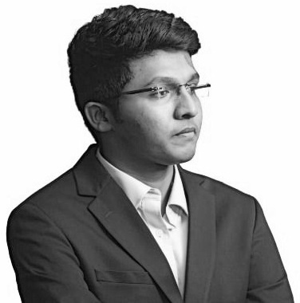
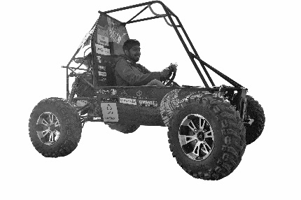

A management professional with a mechanical engineering perspective, aspiring to work on cutting-edge tech products that revolutionize the way we live, work, travel, shop, communicate, socialize, recover from ailments, etc.
MEM @ Duke...
Pursuing the Master of Engineering Management program at Duke University specializing in Product Management and Commercialization.
Pursuing the Master of Engineering Management program at Duke University specializing in Product Management and Commercialization.
Distinguished as the Duke MEM’s Garda Scholar and awarded a $10,000 scholarship for AY22-23.
Set to graduate in December, 2023 and will be granted a 3 Year STEM OPT Extension.

Graduate life @ Duke...
Active member of Product Management Club, IDEA Club, Duke Aviation Association, Duke STEM Connect, Duke Outing Club, Duke BOLD (Building Outdoor Leaders at Duke).
Active member of Product Management Club, IDEA Club, Duke Aviation Association, Duke STEM Connect, Duke Outing Club, Duke BOLD (Building Outdoor Leaders at Duke).
Executive Director of Project Operations at Duke Interdisciplinary Social Innovators (DISI), providing pro bono consulting services to social organizations in impact evaluation, capacity building, strategy, technology integration, finance and enabling positive change.
Plays Badminton and Cricket and a big fan of Duke Basketball. Let’s Go Duke.
Notable milestones...
Enabled business growth at Victorious Future and Turbo Energy Private Limited.
Enabled business growth at Victorious Future and Turbo Energy Private Limited.
Managed business relationships with fortune 500 companies: Tata Motors & Renault Nissan.
Managed multiple projects generating $11.6 million, in annual revenue.

An Engineer before everything else…
Studied surface characteristics of additive manufacturing specimens,
Studied surface characteristics of additive manufacturing specimens,
Created Mathematical models for surface finishing processes,
Developed forecasting models using data analytics tools,
Worked with the Indian Railways and Optimized designs to address the structural issues in rolling stocks,
Designed a novel completely mechanized antilock braking system,
Designed and Fabricated a full-scale All-Terrain Vehicle.
Ideas worth spreading...
I strongly resonate with the idea of TED as the platform promotes the exchange of ideas,
sparks conversations, and inspires people to solve global issues.
I strongly resonate with the idea of TED as the platform promotes the exchange of ideas,
sparks conversations, and inspires people to solve global issues.
I initiated and organized TEDx RMKEC, the first-ever TEDx event at my college as
I felt that the student community would greatly benefit from such an empowering platform.

"Nobody ever figures out what life is all about, and it doesn’t matter. Explore the world. Nearly everything is really interesting if you go into it deeply enough."

I love giving back...
I was incredibly lucky to turn my passion for helping the society
by working with various NGOs.
I was incredibly lucky to turn my passion for helping the society
by working with various NGOs.
Over the last eight years,
I have participated in several volunteering activities such as
teaching and mentoring underprivileged children, organizing book donation camps,
tree plantation drives, marathons, and awareness campaigns.
Love to travel...
Have travelled throughout India, exploring the diverse cultures and cuisines. Actively travelling and exploring the United States over breaks
When the weather turns bad and staying out is not an option...